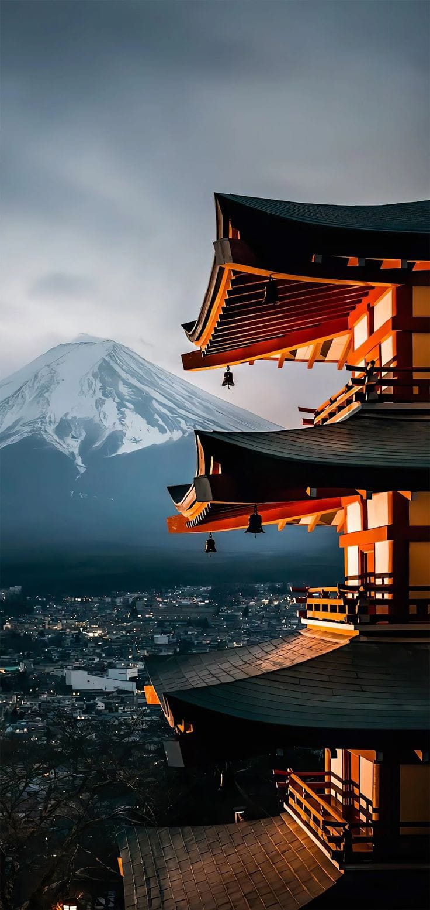
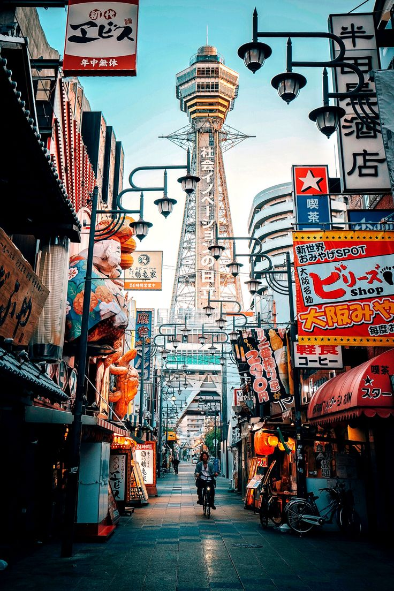
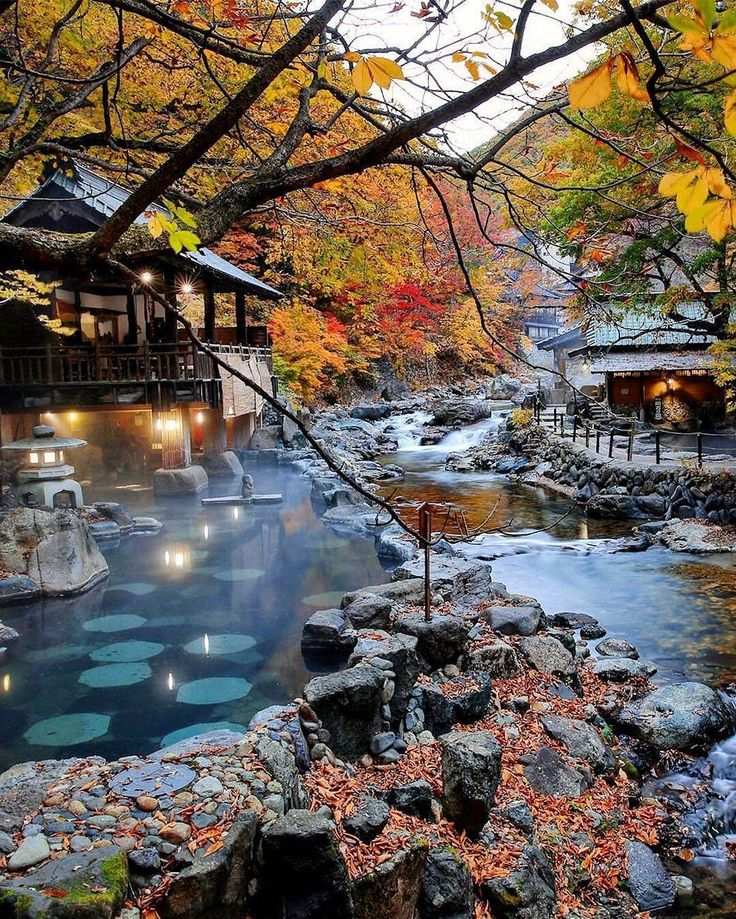
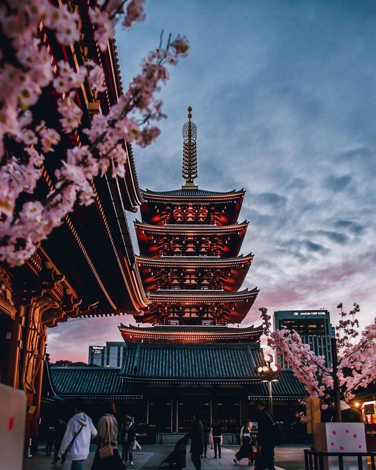

Sumérgete en un país donde la tradición se fusiona con la innovación, donde los cerezos florecen en primavera y los rascacielos iluminan la noche. Desde templos centenarios
hasta la alta tecnología de Tokio, Japón te invita a un viaje único donde cada experiencia es una obra maestra. ¡Descubre la magia de Japón, donde el pasado y el futuro
bailan en armonía!
Entre Tradición y Futuro: La Magia de los Destinos Turísticos Japoneses
Japón es un país fascinante con una rica historia, una cultura vibrante y una mezcla única de tradición y modernidad. Aquí tienes algunos de los atractivos turísticos más destacados de Japón.
Tokio
La capital bulliciosa con una mezcla de modernidad y tradición. Lugares de interés incluyen el Barrio de Shibuya, Akihabara (distrito electrónico), y el Palacio Imperial.
Kioto
Centro histórico lleno de templos, santuarios y jardines tradicionales. Destacados incluyen el Templo Kinkaku-ji (Pabellón Dorado) y el Santuario Fushimi Inari.

Nara
Hogar de ciervos salvajes y el Gran Buda en el Parque Nara, así como templos antiguos como el Templo Todai-ji.
Hiroshima
Conmemorativo del Museo de la Paz y el Parque Memorial de la Paz, recordando los eventos de la Segunda Guerra Mundial.
Osaka
Famosa por su animada escena gastronómica y el Castillo de Osaka.

Monte Fuji
El pico más alto de Japón, una icónica montaña sagrada y un lugar popular para practicar senderismo.
Onsen (Aguas Termales)
Destinos como Hakone ofrecen aguas termales relajantes con vistas al Monte Fuji.

Distrito de Asakusa en Tokio
Hogar del Templo Senso-ji, el más antiguo de Tokio.

Japón en Cinco Días
Nos embarcaremos en un recorrido por el corazón de Japón, donde la modernidad de Tokio se encuentra con la serenidad histórica de Kioto. En solo cinco días
y cuatro noches, exploraremos los destinos más emblemáticos, desde los rascacielos iluminados hasta los templos antiguos. Prepárense para una odisea única,
donde la tradición y la innovación danzan en armonía, revelando la rica y cautivadora esencia de este fascinante país.
Día 1: Tokio - Descubriendo la Metrópolis
Mañana:Llegada a Tokio, desayuno y visita al Barrio de Asakusa con el Templo Senso-ji.
Tarde:Paseo por el moderno distrito de Shibuya y tiempo para compras en Harajuku.
Noche:Cena en un restaurante izakaya y exploración de las luces de la ciudad.
Día 2: Tokio - Modernidad y Tradición
Mañana:Visita al Museo Nacional de Tokio y al Parque Ueno.
Tarde:Exploración de Akihabara, el distrito electrónico de Tokio.
Noche:Cena en un restaurante temático y paseo por Odaiba.
Día 3: Kioto - Tesoros Históricos
Mañana:Viaje a Kioto en tren bala (shinkansen).
Tarde:Visita al Templo Kinkaku-ji (Pabellón Dorado) y al Bosque de Bambú de Arashiyama.
Noche:Cena en el distrito de Gion y búsqueda de geishas.
Día 4: Kioto - Tranquilidad y Cultura
Mañana:Exploración del Templo Fushimi Inari y su camino de torii.
Tarde:Visita al Templo Kiyomizu-dera y paseo por el distrito Higashiyama.
Noche:Cena en un restaurante tradicional de kaiseki.
Día 5: Regreso a Tokio - Despedida
Mañana:Regreso a Tokio en tren.
Tarde:Últimas compras en Tokio o visita a un onsen (baño termal).
Noche:Cena de despedida en un restaurante con vista panorámica.
Calculando Sueños: Detalles Financieros del Viaje a Japón en Cinco Días
Los costos exactos del viaje puede depender de la temporada del año, las tarifas actuales, la elección de hoteles y restaurantes, y si se aprovechan ofertas o descuentos.
Sin embargo, una estimación general de los costos para un viaje de 5 días y 4 noches en Francia desde Colombia, asumiendo un presupuesto moderado, es el siguiente.
Vuelos (ida y vuelta desde Bogotá, Colombia a Tokio, Japón):
Precio estimado: $1,800 - $3,000 USD por persona.
Hospedaje:
Tokio (3 noches): $300 - $600 USD.
Kioto (1 noche): $100 - $300 USD.
Transporte interno (tren bala, metro, etc.):
Precio estimado: $150 - $300 USD por persona.
Comida:
Precio promedio por comida: $20 - $50 USD por persona.
Total estimado para 5 días: $400 - $800 USD por persona.
Entradas a sitios turísticos y actividades:
Entradas a templos y santuarios: $50 - $100 USD por persona.
Pases de transporte y tarjetas turísticas: $50 - $100 USD por persona.
Gastos personales (compras, souvenirs, etc.):
Precio estimado: $100 - $300 USD por persona.
Seguro de viaje:
Precio estimado: $50 - $100 USD por persona.
Costo total estimado del viaje:
Rango bajo: $2,950 - $5,250 USD por persona.
Rango alto: $3,950 - $6,350 USD por persona.
Nota: Los precios son aproximados y están sujetos a cambios. Se recomienda verificar las tarifas actuales y realizar reservas con anticipación para obtener mejores precios.